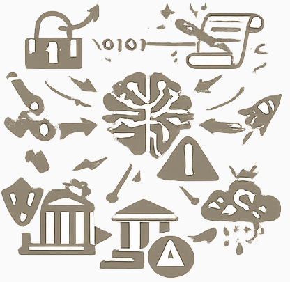
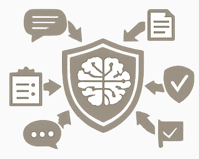

Continuous Security Validation for AI Systems
AI adoption is accelerating faster than the security systems designed to protect it. Most current defenses rely on static filters, occasional red teaming, manual audits, and delayed updates. This creates dangerous gaps between emerging threats and real protection.
For organizations deploying AI, trust is becoming as important as capability.
Most AI developers implement baseline safety layers before release: content filters, alignment rules, abuse detection, and protections against widely known harmful outputs.
These controls are useful, but they are necessarily generic. Developers usually do not know the internal business risks, confidential assets, operational logic, or changing priorities of every organization that will later deploy the model.
A bank, pharmaceutical company, law firm, government agency, and industrial operator all face completely different threat models. What is acceptable in one environment may be dangerous in another.
At the same time, external threats evolve continuously. New jailbreak methods, prompt manipulation techniques, bypass strategies, and multi-step attack chains appear faster than traditional release cycles can respond.
As a result, protections embedded by developers at launch may become outdated in a short period of time, while one-time audits or occasional red teaming cannot keep pace with a constantly changing threat landscape.
AI Security requires continuous adaptation, organization-specific controls, and real-time validation.

Traditional testing cannot keep pace.
Dailogix is a next-generation continuous AI security platform built around automated red teaming, collective threat intelligence, and real-time validation.
Instead of isolated one-time testing, Dailogix creates a permanent security loop around deployed AI systems.

Every organization has unique risks. Dailogix allows clients to define their own protected boundaries.
A bank, hospital, defense contractor, and SaaS company each receive protection tailored to their real-world exposure.
To achieve high-speed and high-accuracy validation, Dailogix integrates a graph-based Security Reasoner.
Instead of brute-force scanning, the system reasons through attack paths intelligently.
In the future, Dailogix will provide certification for AI systems under continuous security validation.
For AI vendors, this becomes a powerful trust signal for customers, regulators, and partners.
AI capability alone will not win the market. Trusted AI will.
Dailogix helps companies transform AI security from a technical burden into a competitive advantage.
Continuous protection. Custom intelligence. Verifiable trust.
We tie the implementation of stages to funding, keeping the project timeline flexible